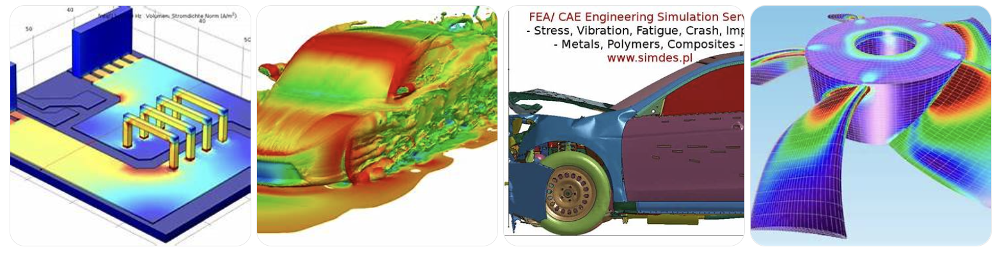
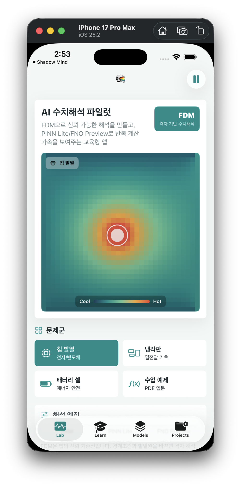
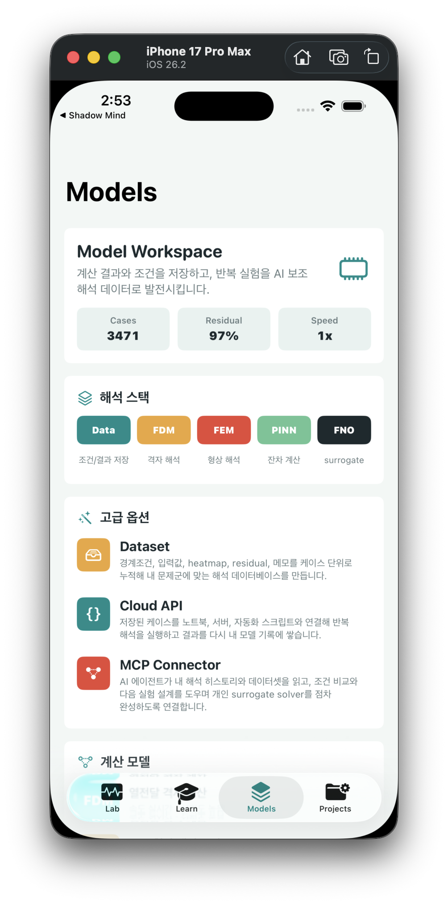

Q1. 나의 아이디어를 한 줄로 소개해주세요.
전문가만 다루던 공학 해석을 기업의 상품개발자, 연구원, 학생까지 직접 사용할 수 있게 만드는 모두의 수치해석 플랫폼입니다.
Q2. 아이디어를 떠올린 배경 이야기를 들려주세요.
제품은 출시되기 전 반드시 수많은 해석을 거칩니다. 반도체 패키지는 발열을 확인해야 하고, 배터리는 열 안정성을 검증해야 하며, 자동차와 기계 부품은 구조 강도와 진동을 봐야 합니다. 전자제품 역시 전자기, 냉각, 내구 조건을 반복해서 확인해야 시장에 나올 수 있습니다. 결국 모든 공산품은 눈에 보이지 않는 수치해석을 거쳐 세상에 나옵니다. 수치해석은 실제 제품을 만들기 전에 컴퓨터 안에서 열, 응력, 유동, 전자기 같은 물리 현상을 계산해 보는 일입니다. 제품을 직접 만들어 실험하기 전에 위험한 설계는 걸러내고, 더 나은 설계 조건을 찾고, 출시 전 문제를 줄이는 핵심 과정입니다. 그래서 제조기업은 매년 해석 소프트웨어, 전문 해석 인력, 서버, 실험 검증에 큰 비용을 씁니다. 겉으로는 소수 전문가만 쓰는 좁은 시장처럼 보이지만, 실제로는 제품 출시 속도와 품질을 좌우하는 거대한 시장입니다.

이러한 중요한 업무는 외주로 해결하기 어렵습니다. 제품 형상, 재료 조건, 공정 조건은 기업의 핵심 기밀이고, 해석은 한 번 맡기고 끝나는 일이 아니라 설계가 바뀔 때마다 계속 반복되는 내부 의사결정 과정입니다. 그래서 회사마다 해석 인력을 두기에 인건비 포함한 관리 비용은 흔히 R&D 비용으로서 기업들마다 상당비용을 지불하고 있습니다. 여기에서 기회를 찾고 있습니다. 지금까지 수치해석이 전문가의 도구였다면, 앞으로는 제품을 만드는 사람이 직접 이해하고 사용할 수 있는 도구가 될 수 있도록 도와줄 수만 있다면, 마치 문서 작성 도구가 전문가만의 프로그램에서 모두의 생산성 도구가 되었듯, 공학 해석도 더 많은 사람이 다루는 도구로 바뀔 수 있다고 믿게 되었습니다.
Q3. 아이디어는 누구의 어떤 문제를 해결해주나요?
해결하려는 문제는 “해석이 필요한 사람은 많지만, 해석 도구는 여전히 전문가의 언어로만 존재한다”는 점입니다. 스타트업과 중소 제조기업은 제품 검증이 필요해도 고가 소프트웨어와 전문 인력 부담이 큽니다. 대기업 내부의 상품개발자도 작은 조건 변경마다 해석팀에 요청하고 기다리는 과정에서 개발 속도가 느려집니다. 학생과 연구자는 수치해석을 배워야 하지만, 수식과 복잡한 프로그램 사용법 앞에서 진입장벽을 느낍니다. 이 문제를 풀기 위해 NumPilot을 구상했습니다. Numerical을 의미하면서 동시에 복잡한 해석 과정을 안내하는 Pilot의 의미를 결합한 이름입니다. “전문가만 쓰는 해석 프로그램”이 아니라 “해석 과정을 함께 안내하는 조종사”라는 뜻을 담았습니다. 로고 역시 헬멧의 바이저 안에 해석 결과의 컬러맵을 넣어, 공학 해석과 AI가 결합된 서비스를 직관적으로 보여주도록 설계했습니다. 이미 numpilot.com 도메인을 확보했고, YouTube handle과 소개 영상 채널도 NumPilot 이름으로 준비해 두었습니다. 이름, 로고, 도메인, 영상 채널을 함께 정리한 이유는 NumPilot을 단순 앱이 아니라 지속 가능한 모두의 수치해석 브랜드로 키우기 위해서입니다.
NumPilot에서 사용자는 열전달, 구조, 전자기처럼 제한된 문제군에서 조건을 바꾸고 결과를 바로 확인할 수 있습니다. 먼저 FDM, FEM 같은 전통 수치해석으로 신뢰 가능한 기준 결과를 만들고, 이후 자주 쓰이는 문제군은 AI 해석 모델과 연결해 더 빠르게 비교할 수 있게 합니다. 핵심은 AI 자체가 아니라, 해석을 모르는 사람도 문제를 설정하고 결과를 이해할 수 있는 사용자 경험입니다. 이렇게 되면 학생은 수치해석을 눈으로 배우고, 연구자는 반복 실험을 더 빠르게 정리하며, 상품개발자는 전문 해석 인력에게 모든 판단을 맡기기 전에 설계 후보를 스스로 좁힐 수 있습니다. 전문가를 없애는 서비스가 아니라, 전문가에게만 갇혀 있던 해석 경험을 제품을 만드는 사람들에게 열어주는 서비스입니다.
Q4. 아이디어를 어떻게 실현하고 싶으신가요?
첫 단계는 실제로 구동되는 수치해석 앱을 출시하는 것입니다. NumPilot 앱에서는 사용자가 칩 발열, 냉각판, 배터리 셀, 기초 구조 문제처럼 익숙한 예제를 선택하고, 조건을 바꾸면 결과가 어떻게 달라지는지 바로 확인할 수 있게 합니다. FDM은 신뢰 가능한 기본 해석을 담당하고, 사용자는 복잡한 해석 프로그램을 처음부터 배우지 않아도 열분포와 결과 변화를 화면에서 직관적으로 이해할 수 있습니다.

두 번째 단계는 해석 결과를 데이터로 축적하고 AI와 연결하는 것입니다. 앱에서 계산한 조건, 결과, residual, heatmap, 메모를 케이스 단위로 저장하면, 단순한 교육용 데모가 아니라 문제군별 해석 데이터베이스가 됩니다. 이 데이터는 반복 실험을 정리하고, 향후 문제군에 맞는 surrogate solver와 AI 보조 해석 기능으로 확장되는 기반이 됩니다.

세 번째 단계는 교육형 진입과 기업 PoC를 함께 추진하는 것입니다. 초기에는 앱, 튜토리얼, 예제 패키지를 통해 학생, 연구자, 개발자를 모으고, 사용자가 입력한 경계조건과 해석 결과를 데이터로 축적합니다. 이후 반복 계산이 많은 열전달, 구조, 전자기 문제를 중심으로 연구실과 기업에 제한적 PoC를 제안하고, 특정 문제군에 특화된 해석 보조 모델을 구독형 서비스로 확장합니다. 팀 구성은 NumPilot의 가장 큰 강점입니다. 대표자는 전기전자공학 전공으로 전자기, 반도체, 발열 문제를 정의하고 사업을 총괄합니다. 기계공학 전공자는 구조, 열, 유동 등 수치해석의 물리 domain 지식을 제공합니다. 통계학과 AI 전문인력은 데이터 검증, 오차 분석, 모델링을 담당하며 diffusion model 기반 AI 프로그램 실무 경험도 보유하고 있습니다. 전기전자와 기계공학이 해석 문제의 재료를 만들고, 통계와 AI가 이를 실제 제품 기능으로 바꾸는 3인 구조입니다. 이 조합이 있기 때문에 NumPilot은 아이디어에 머물지 않고 앱 출시, 데이터 축적, 기업 협약, 구독모델까지 한 흐름으로 실행할 수 있습니다.
Q5. 사업 분야를 선택해주세요.
IT
Q8. 나의 아이디어를 소개하는 영상을 링크로 제출해주세요.
https://youtube.com/shorts/UgRFoZFSKkw